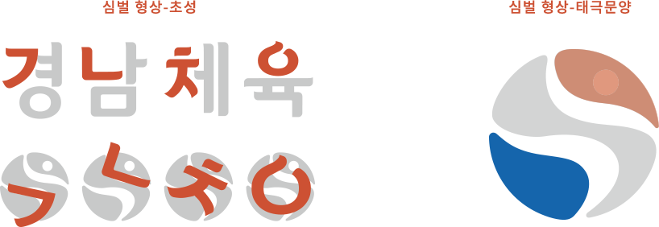
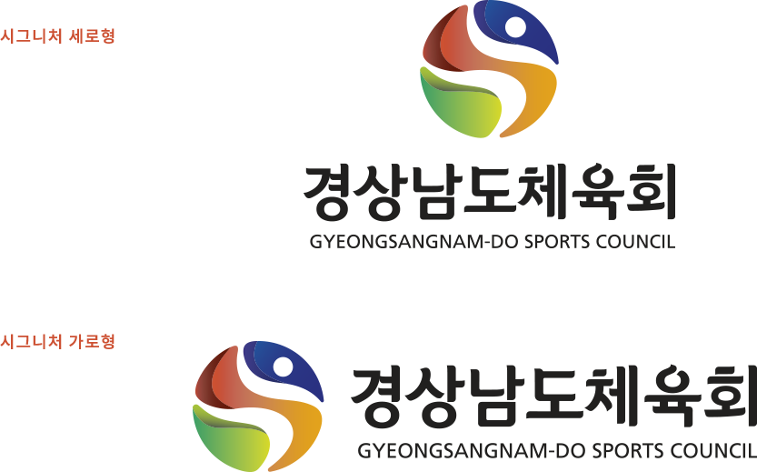
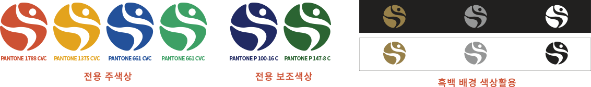

심벌마크
심블은 경남체육의 초성인 ‘ㄱ,ㄴ,ㅊ,ㅇ’을 큰 원 안에 배치하여 디자인되었습니다.
이 형태는 역동적으로 움직이는 모습을 강조하며, 동시에 큰 원은 단결과 통합을 상징합니다. 초성들이 모여 하나로 통합되는 모습은 지역 사회의 단합과 협력을 나타냅니다.
원의 위와 아래에는 태극 문양이 들어가 있어, 태극 문양은 균형과 조화를 상징하여 지역 사회의 통합과 발전을 나타냅니다.
경상남도의 체육 전담 기관으로써 지역의 아름다운 자연과 산업 발전, 도민들의
건강과 행복에 기여하는 모습을 효과적으로 전달할 수 있을 것입니다.

시그니처
시그니처는 CI의 핵심요소인 마크와 로고타입을 조합한 것을 말한다. 시그니처 사용시 절대로 비례나 간격, 크기를 임의로 변경할 수 없으며 사용규정을 준수하여야 한다.

전용색상 / 배경 색상활용
전용색상은 경상남도 CI의 전용색상을 승계합니다. 심볼과 더불어 경상남도체육회의 이미지를 전달하는 중요한 기능을 한다.
